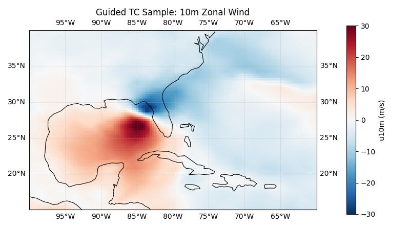
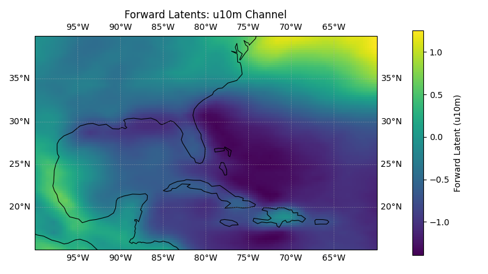

Note
Go to the end to download the full example code.
CBottle Tropical Cyclone Guidance#
Guided tropical cyclone sampling with cBottle and odds-ratio diagnostics.
This example demonstrates the cBottle TC guidance model for generating synthetic tropical cyclone samples at user-specified locations and computing the log-odds ratio between the guided and unguided distributions. The odds ratio quantifies how much more likely a particular sample is under guidance compared to the base model.
For more information on cBottle see:
For more information on the odds ratio see:
In this example you will learn:
Running guided TC sampling with
earth2studio.models.dx.CBottleTCGuidanceVisualizing a guided sample over a regional domain
Reloading the model with second-order derivative support for odds-ratio computation
Computing and interpreting the log-odds ratio of a guided sample
# /// script
# dependencies = [
# "earth2studio[cbottle] @ git+https://github.com/NVIDIA/earth2studio.git",
# "cartopy",
# ]
# ///
Set Up#
For this example we need the cBottle TC guidance diagnostic model. We load it twice:
Default (fast) path for standard guided sampling
Second-order-derivative path for odds-ratio computation
Thus, we need the following:
Diagnostic Model: Use the built in CBottle TC Guidance Model
earth2studio.models.dx.CBottleTCGuidance.
import os
os.makedirs("outputs", exist_ok=True)
from dotenv import load_dotenv
load_dotenv() # TODO: make common example prep function
from datetime import datetime
import numpy as np
import torch
from earth2studio.models.dx import CBottleTCGuidance
device = torch.device("cuda" if torch.cuda.is_available() else "cpu")
# Load the default model package which downloads the checkpoint from NGC
package = CBottleTCGuidance.load_default_package()
Guided TC Sampling (Fast Path)#
The guidance tensor marks the location where we want TC activity. Here we place a
single guidance point near Florida and request one timestamp during hurricane season.
The fast model path (allow_second_order_derivatives=False) is optimized for
standard guided inference.
lat = torch.tensor([27.0], device=device) # Near Florida
lon = torch.tensor([-82.0], device=device) # Converted internally to [0, 360)
times = [datetime(2005, 10, 11, 12)]
model = CBottleTCGuidance.load_model(package, seed=0).to(device)
# Create guidance tensor
guidance, coords = model.create_guidance_tensor(lat, lon, times)
guidance = guidance.to(device)
# Run guided sampling
guided_sample, guided_coords = model(guidance, coords)
Downloading training-state-002176000.checkpoint: 0%| | 0.00/1.67G [00:00<?, ?B/s]
Downloading training-state-002176000.checkpoint: 1%| | 10.0M/1.67G [00:00<00:33, 53.8MB/s]
Downloading training-state-002176000.checkpoint: 4%|▎ | 60.0M/1.67G [00:00<00:07, 236MB/s]
Downloading training-state-002176000.checkpoint: 6%|▋ | 110M/1.67G [00:00<00:05, 325MB/s]
Downloading training-state-002176000.checkpoint: 9%|▉ | 160M/1.67G [00:00<00:04, 374MB/s]
Downloading training-state-002176000.checkpoint: 12%|█▏ | 210M/1.67G [00:00<00:03, 405MB/s]
Downloading training-state-002176000.checkpoint: 15%|█▌ | 260M/1.67G [00:00<00:03, 421MB/s]
Downloading training-state-002176000.checkpoint: 18%|█▊ | 310M/1.67G [00:00<00:03, 437MB/s]
Downloading training-state-002176000.checkpoint: 21%|██ | 360M/1.67G [00:00<00:03, 447MB/s]
Downloading training-state-002176000.checkpoint: 24%|██▍ | 410M/1.67G [00:01<00:03, 446MB/s]
Downloading training-state-002176000.checkpoint: 27%|██▋ | 460M/1.67G [00:01<00:02, 453MB/s]
Downloading training-state-002176000.checkpoint: 30%|██▉ | 510M/1.67G [00:01<00:02, 459MB/s]
Downloading training-state-002176000.checkpoint: 33%|███▎ | 560M/1.67G [00:01<00:02, 464MB/s]
Downloading training-state-002176000.checkpoint: 36%|███▌ | 610M/1.67G [00:01<00:02, 466MB/s]
Downloading training-state-002176000.checkpoint: 39%|███▊ | 660M/1.67G [00:01<00:02, 463MB/s]
Downloading training-state-002176000.checkpoint: 42%|████▏ | 710M/1.67G [00:01<00:02, 466MB/s]
Downloading training-state-002176000.checkpoint: 45%|████▍ | 760M/1.67G [00:01<00:02, 467MB/s]
Downloading training-state-002176000.checkpoint: 48%|████▊ | 810M/1.67G [00:01<00:02, 468MB/s]
Downloading training-state-002176000.checkpoint: 50%|█████ | 860M/1.67G [00:02<00:01, 466MB/s]
Downloading training-state-002176000.checkpoint: 53%|█████▎ | 910M/1.67G [00:02<00:01, 419MB/s]
Downloading training-state-002176000.checkpoint: 56%|█████▋ | 960M/1.67G [00:02<00:01, 402MB/s]
Downloading training-state-002176000.checkpoint: 59%|█████▉ | 0.99G/1.67G [00:02<00:01, 417MB/s]
Downloading training-state-002176000.checkpoint: 62%|██████▏ | 1.04G/1.67G [00:02<00:01, 418MB/s]
Downloading training-state-002176000.checkpoint: 65%|██████▌ | 1.08G/1.67G [00:02<00:01, 386MB/s]
Downloading training-state-002176000.checkpoint: 67%|██████▋ | 1.12G/1.67G [00:02<00:01, 394MB/s]
Downloading training-state-002176000.checkpoint: 70%|███████ | 1.17G/1.67G [00:03<00:01, 417MB/s]
Downloading training-state-002176000.checkpoint: 73%|███████▎ | 1.22G/1.67G [00:03<00:01, 427MB/s]
Downloading training-state-002176000.checkpoint: 76%|███████▌ | 1.27G/1.67G [00:03<00:01, 414MB/s]
Downloading training-state-002176000.checkpoint: 79%|███████▉ | 1.32G/1.67G [00:03<00:00, 434MB/s]
Downloading training-state-002176000.checkpoint: 82%|████████▏ | 1.37G/1.67G [00:03<00:00, 448MB/s]
Downloading training-state-002176000.checkpoint: 85%|████████▌ | 1.42G/1.67G [00:03<00:00, 456MB/s]
Downloading training-state-002176000.checkpoint: 88%|████████▊ | 1.46G/1.67G [00:03<00:00, 466MB/s]
Downloading training-state-002176000.checkpoint: 91%|█████████ | 1.51G/1.67G [00:03<00:00, 471MB/s]
Downloading training-state-002176000.checkpoint: 94%|█████████▍| 1.56G/1.67G [00:03<00:00, 469MB/s]
Downloading training-state-002176000.checkpoint: 97%|█████████▋| 1.61G/1.67G [00:04<00:00, 473MB/s]
Downloading training-state-002176000.checkpoint: 100%|█████████▉| 1.66G/1.67G [00:04<00:00, 477MB/s]
Downloading training-state-002176000.checkpoint: 100%|██████████| 1.67G/1.67G [00:04<00:00, 430MB/s]
Post Processing Guided Sample#
Plot the 10-metre zonal wind (u10m) over a Caribbean domain to visualize the generated tropical cyclone structure.
import cartopy.crs as ccrs
import matplotlib.pyplot as plt
plt.close("all")
variables = guided_coords["variable"]
u_var = "u10m"
u_idx = int(np.where(variables == u_var)[0][0])
# guided_sample dims: [time, lead_time, variable, lat, lon]
u = guided_sample[0, 0, u_idx].detach().cpu().numpy()
lat_coords = guided_coords["lat"]
lon_coords = guided_coords["lon"]
# Caribbean box in 0-360 longitude convention
lon_min, lon_max = 260.0, 300.0 # 100W to 60W
lat_min, lat_max = 15.0, 40.0 # 15N to 40N
lon_mask = (lon_coords >= lon_min) & (lon_coords <= lon_max)
lat_mask = (lat_coords >= lat_min) & (lat_coords <= lat_max)
u_carib = u[np.ix_(lat_mask, lon_mask)]
lat_carib = lat_coords[lat_mask]
lon_carib = lon_coords[lon_mask]
# Convert to -180..180 for plotting
lon_carib_deg = ((lon_carib + 180.0) % 360.0) - 180.0
fig, ax = plt.subplots(subplot_kw={"projection": ccrs.PlateCarree()}, figsize=(8, 4.5))
pcm = ax.pcolormesh(
lon_carib_deg,
lat_carib,
u_carib,
shading="auto",
cmap="RdBu_r",
vmin=-30,
vmax=30,
transform=ccrs.PlateCarree(),
)
ax.set_extent([-100.0, -60.0, lat_min, lat_max], crs=ccrs.PlateCarree())
ax.coastlines(resolution="110m", linewidth=0.8)
ax.gridlines(draw_labels=True, linewidth=0.5, alpha=0.5, linestyle="--")
plt.colorbar(pcm, ax=ax, label=f"{u_var} (m/s)", pad=0.08, shrink=0.92)
ax.set_title("Guided TC Sample: 10m Zonal Wind")
plt.tight_layout()
plt.savefig("outputs/05_cbottle_tc_guided_sample.jpg")

Computing the Odds Ratio#
The odds ratio requires computing Hutchinson divergence terms that need second-order
derivatives through the model. We reload with allow_second_order_derivatives=True
for odds ratio calculations.
Note: sampler_steps is also reduced in this section to speed up runtime. Use
the default sampler settings for improved quality and more stable odds-ratio values.
model = CBottleTCGuidance.load_model(
package,
seed=0,
sampler_steps=2,
allow_second_order_derivatives=True,
).to(device)
log_odds_ratio, forward_latents, latent_coords = model.calculate_odds_ratio(
guidance,
coords,
)
print(f"Log odds ratio: {log_odds_ratio:.4f}")
print(f"Forward latents shape: {tuple(forward_latents.shape)}")
calculate_odds_ratio[forward]: 0%| | 0/27 [00:00<?, ?it/s]
calculate_odds_ratio[forward]: 4%|▎ | 1/27 [00:00<00:25, 1.01it/s]
calculate_odds_ratio[forward]: 7%|▋ | 2/27 [00:01<00:24, 1.04it/s]
calculate_odds_ratio[forward]: 11%|█ | 3/27 [00:02<00:23, 1.04it/s]
calculate_odds_ratio[forward]: 15%|█▍ | 4/27 [00:03<00:21, 1.05it/s]
calculate_odds_ratio[forward]: 19%|█▊ | 5/27 [00:04<00:21, 1.04it/s]
calculate_odds_ratio[forward]: 22%|██▏ | 6/27 [00:05<00:20, 1.05it/s]
calculate_odds_ratio[forward]: 26%|██▌ | 7/27 [00:06<00:19, 1.05it/s]
calculate_odds_ratio[forward]: 30%|██▉ | 8/27 [00:07<00:18, 1.05it/s]
calculate_odds_ratio[forward]: 33%|███▎ | 9/27 [00:08<00:17, 1.04it/s]
calculate_odds_ratio[forward]: 37%|███▋ | 10/27 [00:09<00:16, 1.04it/s]
calculate_odds_ratio[forward]: 41%|████ | 11/27 [00:10<00:15, 1.04it/s]
calculate_odds_ratio[forward]: 44%|████▍ | 12/27 [00:11<00:14, 1.04it/s]
calculate_odds_ratio[forward]: 48%|████▊ | 13/27 [00:12<00:13, 1.05it/s]
calculate_odds_ratio[forward]: 52%|█████▏ | 14/27 [00:13<00:12, 1.05it/s]
calculate_odds_ratio[forward]: 56%|█████▌ | 15/27 [00:14<00:11, 1.05it/s]
calculate_odds_ratio[forward]: 59%|█████▉ | 16/27 [00:15<00:10, 1.05it/s]
calculate_odds_ratio[forward]: 63%|██████▎ | 17/27 [00:16<00:09, 1.05it/s]
calculate_odds_ratio[forward]: 67%|██████▋ | 18/27 [00:17<00:08, 1.04it/s]
calculate_odds_ratio[forward]: 70%|███████ | 19/27 [00:18<00:07, 1.05it/s]
calculate_odds_ratio[forward]: 74%|███████▍ | 20/27 [00:19<00:06, 1.05it/s]
calculate_odds_ratio[forward]: 78%|███████▊ | 21/27 [00:20<00:05, 1.05it/s]
calculate_odds_ratio[forward]: 81%|████████▏ | 22/27 [00:21<00:05, 1.14s/it]
calculate_odds_ratio[forward]: 85%|████████▌ | 23/27 [00:22<00:04, 1.08s/it]
calculate_odds_ratio[forward]: 89%|████████▉ | 24/27 [00:23<00:03, 1.04s/it]
calculate_odds_ratio[forward]: 93%|█████████▎| 25/27 [00:24<00:02, 1.01s/it]
calculate_odds_ratio[forward]: 96%|█████████▋| 26/27 [00:25<00:00, 1.00it/s]
calculate_odds_ratio[forward]: 100%|██████████| 27/27 [00:26<00:00, 1.02it/s]
calculate_odds_ratio[backward]: 0%| | 0/26 [00:00<?, ?it/s]
calculate_odds_ratio[backward]: 4%|▍ | 1/26 [00:05<02:06, 5.07s/it]
calculate_odds_ratio[backward]: 8%|▊ | 2/26 [00:09<01:58, 4.93s/it]
calculate_odds_ratio[backward]: 12%|█▏ | 3/26 [00:16<02:12, 5.76s/it]
calculate_odds_ratio[backward]: 15%|█▌ | 4/26 [00:23<02:14, 6.14s/it]
calculate_odds_ratio[backward]: 19%|█▉ | 5/26 [00:30<02:13, 6.35s/it]
calculate_odds_ratio[backward]: 23%|██▎ | 6/26 [00:36<02:09, 6.48s/it]
calculate_odds_ratio[backward]: 27%|██▋ | 7/26 [00:43<02:04, 6.56s/it]
calculate_odds_ratio[backward]: 31%|███ | 8/26 [00:50<01:59, 6.62s/it]
calculate_odds_ratio[backward]: 35%|███▍ | 9/26 [00:57<01:53, 6.66s/it]
calculate_odds_ratio[backward]: 38%|███▊ | 10/26 [01:03<01:46, 6.68s/it]
calculate_odds_ratio[backward]: 42%|████▏ | 11/26 [01:10<01:40, 6.69s/it]
calculate_odds_ratio[backward]: 46%|████▌ | 12/26 [01:17<01:33, 6.71s/it]
calculate_odds_ratio[backward]: 50%|█████ | 13/26 [01:23<01:27, 6.72s/it]
calculate_odds_ratio[backward]: 54%|█████▍ | 14/26 [01:30<01:20, 6.72s/it]
calculate_odds_ratio[backward]: 58%|█████▊ | 15/26 [01:38<01:16, 6.92s/it]
calculate_odds_ratio[backward]: 62%|██████▏ | 16/26 [01:44<01:08, 6.87s/it]
calculate_odds_ratio[backward]: 65%|██████▌ | 17/26 [01:51<01:01, 6.83s/it]
calculate_odds_ratio[backward]: 69%|██████▉ | 18/26 [01:58<00:54, 6.80s/it]
calculate_odds_ratio[backward]: 73%|███████▎ | 19/26 [02:05<00:47, 6.78s/it]
calculate_odds_ratio[backward]: 77%|███████▋ | 20/26 [02:11<00:40, 6.77s/it]
calculate_odds_ratio[backward]: 81%|████████ | 21/26 [02:18<00:33, 6.76s/it]
calculate_odds_ratio[backward]: 85%|████████▍ | 22/26 [02:25<00:27, 6.75s/it]
calculate_odds_ratio[backward]: 88%|████████▊ | 23/26 [02:31<00:20, 6.74s/it]
calculate_odds_ratio[backward]: 92%|█████████▏| 24/26 [02:38<00:13, 6.74s/it]
calculate_odds_ratio[backward]: 96%|█████████▌| 25/26 [02:45<00:06, 6.74s/it]
calculate_odds_ratio[backward]: 100%|██████████| 26/26 [02:50<00:00, 6.17s/it]
calculate_odds_ratio[backward_no_guidance]: 0%| | 0/26 [00:00<?, ?it/s]
calculate_odds_ratio[backward_no_guidance]: 4%|▍ | 1/26 [00:04<01:49, 4.37s/it]
calculate_odds_ratio[backward_no_guidance]: 8%|▊ | 2/26 [00:08<01:44, 4.36s/it]
calculate_odds_ratio[backward_no_guidance]: 12%|█▏ | 3/26 [00:13<01:40, 4.37s/it]
calculate_odds_ratio[backward_no_guidance]: 15%|█▌ | 4/26 [00:17<01:36, 4.37s/it]
calculate_odds_ratio[backward_no_guidance]: 19%|█▉ | 5/26 [00:21<01:31, 4.38s/it]
calculate_odds_ratio[backward_no_guidance]: 23%|██▎ | 6/26 [00:26<01:27, 4.37s/it]
calculate_odds_ratio[backward_no_guidance]: 27%|██▋ | 7/26 [00:30<01:23, 4.37s/it]
calculate_odds_ratio[backward_no_guidance]: 31%|███ | 8/26 [00:34<01:18, 4.38s/it]
calculate_odds_ratio[backward_no_guidance]: 35%|███▍ | 9/26 [00:39<01:14, 4.37s/it]
calculate_odds_ratio[backward_no_guidance]: 38%|███▊ | 10/26 [00:43<01:09, 4.36s/it]
calculate_odds_ratio[backward_no_guidance]: 42%|████▏ | 11/26 [00:48<01:08, 4.56s/it]
calculate_odds_ratio[backward_no_guidance]: 46%|████▌ | 12/26 [00:53<01:03, 4.50s/it]
calculate_odds_ratio[backward_no_guidance]: 50%|█████ | 13/26 [00:57<00:58, 4.46s/it]
calculate_odds_ratio[backward_no_guidance]: 54%|█████▍ | 14/26 [01:01<00:53, 4.44s/it]
calculate_odds_ratio[backward_no_guidance]: 58%|█████▊ | 15/26 [01:06<00:48, 4.43s/it]
calculate_odds_ratio[backward_no_guidance]: 62%|██████▏ | 16/26 [01:10<00:44, 4.41s/it]
calculate_odds_ratio[backward_no_guidance]: 65%|██████▌ | 17/26 [01:14<00:39, 4.40s/it]
calculate_odds_ratio[backward_no_guidance]: 69%|██████▉ | 18/26 [01:19<00:35, 4.40s/it]
calculate_odds_ratio[backward_no_guidance]: 73%|███████▎ | 19/26 [01:23<00:30, 4.40s/it]
calculate_odds_ratio[backward_no_guidance]: 77%|███████▋ | 20/26 [01:28<00:26, 4.40s/it]
calculate_odds_ratio[backward_no_guidance]: 81%|████████ | 21/26 [01:32<00:21, 4.39s/it]
calculate_odds_ratio[backward_no_guidance]: 85%|████████▍ | 22/26 [01:36<00:17, 4.39s/it]
calculate_odds_ratio[backward_no_guidance]: 88%|████████▊ | 23/26 [01:41<00:13, 4.39s/it]
calculate_odds_ratio[backward_no_guidance]: 92%|█████████▏| 24/26 [01:45<00:08, 4.39s/it]
calculate_odds_ratio[backward_no_guidance]: 96%|█████████▌| 25/26 [01:50<00:04, 4.39s/it]
calculate_odds_ratio[backward_no_guidance]: 100%|██████████| 26/26 [01:54<00:00, 4.38s/it]
Log odds ratio: 2.2465
Forward latents shape: (1, 45, 721, 1440)
Post Processing Forward Latents#
The forward_latents tensor is returned on the same grid as the model output
(lat-lon when lat_lon=True). We visualize a single channel (u10m) over the same
Caribbean domain. This shows the latent-space representation that the odds-ratio
computation operates on.
plt.close("all")
# Identify the u10m channel in output variable ordering
latent_variables = latent_coords["variable"]
u_latent_idx = int(np.where(latent_variables == u_var)[0][0])
latent_u = forward_latents[0, u_latent_idx].detach().cpu().numpy()
latent_u_carib = latent_u[np.ix_(lat_mask, lon_mask)]
fig, ax = plt.subplots(subplot_kw={"projection": ccrs.PlateCarree()}, figsize=(8, 4.5))
pcm = ax.pcolormesh(
lon_carib_deg,
lat_carib,
latent_u_carib,
shading="auto",
cmap="viridis",
transform=ccrs.PlateCarree(),
)
ax.set_extent([-100.0, -60.0, lat_min, lat_max], crs=ccrs.PlateCarree())
ax.coastlines(resolution="110m", linewidth=0.8)
ax.gridlines(draw_labels=True, linewidth=0.5, alpha=0.5, linestyle="--")
plt.colorbar(pcm, ax=ax, label=f"Forward Latent ({u_var})", pad=0.08, shrink=0.92)
ax.set_title(f"Forward Latents: {u_var} Channel")
plt.tight_layout()
plt.savefig("outputs/05_cbottle_tc_forward_latents.jpg")

Total running time of the script: (5 minutes 39.602 seconds)